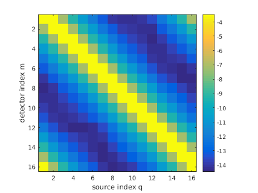
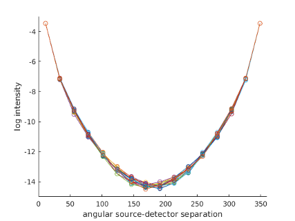
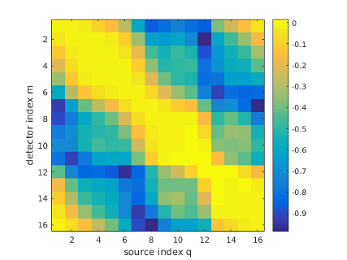
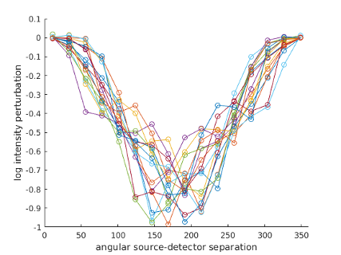

| Image Reconstruction in Diffuse Optical Tomography |
Toast toolbox tutorial: Forward solver for inhomogeneous parametersThis example builds on the homogeneous parameter example described in the previous example, by setting up an inhomogeneous distribution for the absorption and scattering parameters. The Matlab script for this example can be downloaded here. Step 1: Creating parameter mapsThe simplest way to define an inhomogeneous parameter distribution for a 2D problem is by creating an image and mapping it onto the mesh basis. Below are two 128x128 bitmaps to be used as the absorption and scattering parameter distributions. 

The images are stored in a common bitmap format (in this case, greyscale .png), and loaded into Matlab with the standard imread command:
bmua = imread('demo_matlab_fwd2_mua.png');
bmus = imread('demo_matlab_fwd2_mus.png'); The images are scaled to the desired parameter values:
bmua = double(bmua)./255.*0.02 + 0.01;
bmus = double(bmus)./255.*1.0 + 1.0; and displayed:
figure;
subplot(1,2,1); imagesc(bmua); axis equal tight; colorbar title('\mu_a'); subplot(1,2,2); imagesc(bmus); axis equal tight; colorbar title('\mu_s'); 
Step 2: Mapping the images in the mesh basisThe images now have to be mapped into the mesh basis. To do this, we first have to create a mapping object:
grd = size(bmua);
basis = toastBasis(mesh,grd); where 'mesh' is the mesh object for a circular mesh created as in the previous example, and grd are the dimensions of a regular grid basis (set here to coincide with the target image sizes). toastBasis creates the mapper object for mapping between unstructured mesh and regular pixel basis. We can now use the Map method of the basis object to map the parameter images into the mesh basis, and display them with mesh.Display:
mua = basis.Map('B->M',bmua);
mus = basis.Map('B->M',bmus); figure; mesh.Display(mua); figure; mesh.Display(mus); 

Note that the edges of the inclusions are slightly jagged and washed out, because the outlines cannot be mapped exactly into the piecewise linear mesh basis. If required, a higher precision can be obtained with a more refined mesh or adaptive refinement along the edges. The third parameter distribution, for refractive index n, is kept constant. So as in the previous example, we can write
nnd = mesh.NodeCount;
ref_bkg = 1.4; ref = ones(nnd,1) * ref_bkg; Step 3: Invoking the forward solverThe rest of the code for this example is identical to the previous one: create the source and measurement vectors, build the system matrix, and solve the linear system. The sinogram and measurement profiles of the resulting boundary measurements look like this:  It can be seen now that there are (small) variations between the measurement profiles of individual source distributions, caused by the parameter inhomogeneities. Step 4: Differences to homogeneous resultsTo see the effect more clearly, we can display the differences to the homogeneous results. Reset the parameters to homogeneous background and re-run the forward solver:
mua = ones(nnd,1)*0.01;
mus = ones(nnd,1)*1; K = dotSysmat (mesh,mua,mus,ref,0); Phi = K\qvec; Yhomog = mvec.' * Phi; Display the difference images:
dlogY = log(Y)-log(Yhomog);


figure imagesc(dlogY); xlabel('source index q'); ylabel('detector index m'); axis equal tight; colorbar figure hold on for i=1:size(Y,2) ywrap = [dlogY(i:end,i); dlogY(1:i-1,i)]; plot(angle,ywrap,'o-'); end axis([0 360 -1 0.1]); xlabel('angular source-detector separation'); ylabel('log intensity perturbation'); It can be seen that the perturbation consist mainly of a reduction in the measured intensity, caused by the increased absorption inclusions. Only for a few measurements in the vicinity of the scattering object close to the boundary, a small increase in intensity due to backscattering is observed. The task of the inverse solver discussed in the next tutorial will be to reconstruct the internal parameter distributions from these measurement perturbations. |